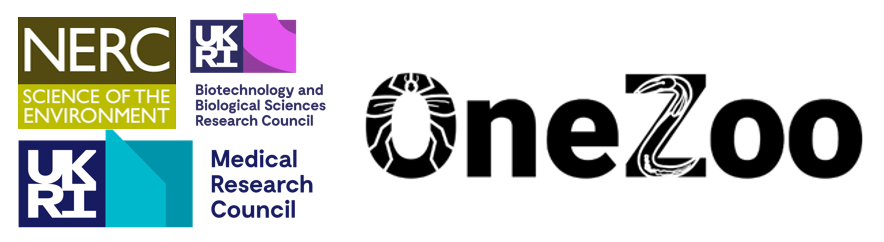

What is the OneZoo Centre for Doctoral Training (CDT)?
More than 60% of current and emerging human infections have a zoonotic origin (i.e. they are transferred between animals and people) and zoonotic pandemics cost the global economy over $60 billion each year. Being able to predict, detect and control zoonoses represents one of the greatest challenges faced by humanity. Our transdisciplinary OneZoo CDT has been created to train postgraduate students in the skills that you will need to become the next generation of leading scientists capable of tackling current, emerging and future zoonotic threats.
What will I do?
As a OneZoo student you will undertake a 3.5 year systematic programme of training in core transferable and specialist skills, alongside your specific PhD project, that will build an in depth understanding of the key drivers of zoonotic diseases and form the basis of integrated solutions. We will foster a global citizenship outlook so that you can improve the health and wellbeing of humans and animals in an environmentally sustainable manner that is equitable and cognisant of socioeconomic, political and cultural needs and constraints.
Your chosen PhD project will be a core focus of your postgraduate journey, but you will also receive training in disease management through our zoonoses case studies which will explore viral (SARS-CoV-2), bacterial (Bovine Tuberculosis, BTB), protist (zoonotic malaria) and metazoan (fascioliasis. liver fluke) zoonotic diseases. These student-centred case studies will be hosted by our four core CDT partners, Cardiff University, Aberystwyth University, Queen’s University Belfast and London School of Hygiene and Tropical Medicine.
You will be trained in translational experimental design including quantitative and qualitative data analysis, bioinformatics and R statistics and modelling. You will also be trained in science communication and impact (including thesis writing) and public engagement.
Throughout your OneZoo programme you will be supported through your Personal Development Plan which you will create with your multidisciplinary supervisory team (which includes external stakeholders such as industry, public health bodies and not-for-profit partner organisations) to identify your developmental and training needs for your specific project. In addition to your supervisory team, you will also be supported by the Research Culture and Wellbeing Lead and the OneZoo Management Board.
Placements
In addition to CASE studentships, all students will be offered placements during their PhD. These can be of short duration scattered throughout the PhD or occur in a block. For the latter, work conducted during the placement can either contribute directly to your PhD research or you may wish to take Interruption of Study (IOS) for a few months to gain insight into another aspect of One Health not directly related to your PhD project.
Is this right for you?
We are looking for enthusiastic students who are willing to be challenged in the way that they approach research, receptive to transdisciplinary training, and flexible to adapt their projects following stakeholder engagement.
How do I apply for a OneZoo Project and OneZoo Funding?
Application deadline: 1st May 2023. Interviews end of May 2023.
- Find out more about the projects available for a September 2023 start on our OneZoo CDT web pages.
- Once you have found a project that you are interested in (please see list below) you may wish to contact the primary supervisory for an informal chat to discuss your interests.
- Complete the OneZoo CDT application Form for an ‘Offer of Funding’.
- Complete the OneZoo Equal Opportunities Form.
- Create a 2 page CV.
- Make a copy of your passport photo page.
- Send items 2-6 to the OneZoo application address: OneZoo@cardiff.ac.uk. Important, title of the email sent to OneZoo must include the name of the host institution to which you are applying and surname of the primary supervisor (e.g. “Cardiff_Cable”).
In addition, you must make a formal application for an ‘Offer of Study’ through standard channels to the institution of your selected first choice: